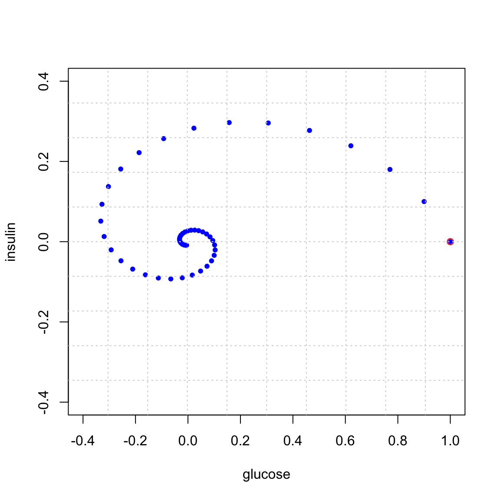

Section 6 Problem Set 6
- Due: Wednesday March 03 by 11:59am CST (since Monday is a wellness day).
- Upload your solutions to Moodle in a PDF.
- You can download the Rmd source file for this problem set.
The Problem Set covers sections 5.1, 5.2, 5.3, 5.6.
6.1 Rain and Sunshine Revisited
On PS4, we encountered the rain-sunshine matrix \(A\) below \[ A = \begin{bmatrix} 1/2 & 1/10 \\ 1/2 & 9/10 \\ \end{bmatrix}. \] Perform the following calculations by hand and show your work.
Find the characteristic polynomial of \(A\) and find its eigenvalues.
Find an eigenvector for each eigenvalue and describe the eigenspaces.
Diagonalize \(A\).
Use your answer to (c) to give a formula for \(A^n\) and use this formula to compute \(\displaystyle{\lim_{n\to \infty}} A^n\).
Write a loop in
Rthat starts with the vectorv = c(1,0)(i.e., a rainy day vector) and applies the matrixA = cbind(c(1/2,1/2),c(1/10,9/10))over and over again (100 times). Explain how your answer compares to the answer to the previous problem.
6.2 The Square Root of a Matrix?
The matrix \(A =\begin{bmatrix} 7 & 2 \\ -4 & 1 \end{bmatrix}\) has characteristic polynomial \(c(\lambda) = \lambda^2 - 8 \lambda + 15 = (\lambda -3)(\lambda - 5).\)
- Describe the eigenspaces of \(A\).
- Diagonalize \(A\).
- Find a matrix that makes sense to call \(\sqrt{A}\). Then show that when you square this matrix, you really do get matrix \(A\).
6.3 Matrix Reconstruction
An unknown \(3 \times 3\) matrix \(M\) has eigenvectors and corresponding eigenvalues: \[ \mathsf{v}_1 = \begin{bmatrix} 1 \\ 2 \\ 1 \end{bmatrix}, \ \lambda_1 = 1; \qquad \mathsf{v}_2 = \begin{bmatrix} 0 \\ 1 \\ 1 \end{bmatrix},\ \lambda_2 = \frac{9}{10}; \qquad \mathsf{v}_3 = \begin{bmatrix} -1 \\ 1 \\ 0 \end{bmatrix},\ \lambda_3 = 0. \]
Without using the matrix \(M\), compute \(M^{10} \mathsf{v}\) where \(\mathsf{v} = \begin{bmatrix}7\\3\\4\end{bmatrix}\). (That is, use only the eigen-information.)
Describe all vectors \(\mathsf{v}\), if there are any, such that \(M^{n} \mathsf{v} \to {\bf 0}\) as \(n \to \infty\).
Is it possible to reconstruct \(M\) from the evidence given? If so, then do it! If not, explain what further information is needed.
6.4 Coyotes and Roadrunners
(This problem can be done by hand or in R) This summer, Macalester’s Ordway Natural History Study Area will be stocked with a population of coyotes and roadrunners so that Math 236 students can study real-life predator-prey dynamics. From similar experiments, we expect the predator-prey dynamics to be governed by linear model below. The eigenvalues of the matrix are also given. \[ \begin{bmatrix} \phantom{\Big\vert} r_{t+1}\phantom{\Big\vert} \\ \phantom{\Big\vert} c_{t+1}\phantom{\Big\vert} \phantom{\Big\vert} \end{bmatrix} =\left[ \begin{array}{cc} \phantom{\Big\vert} \frac{57}{50} & -\frac{6}{50} \\ \phantom{\Big\vert} \frac{4}{50} & \frac{43}{50} \\ \end{array} \right] \begin{bmatrix} \phantom{\Big\vert} r_t \phantom{\Big\vert} \\ \phantom{\Big\vert} c_t \phantom{\Big\vert} \end{bmatrix} = \begin{bmatrix} \phantom{\Big\vert} \frac{57}{50} r_t - \frac{6}{50} c_t \\ \phantom{\Big\vert} \frac{4}{50} r_t + \frac{43}{50} c_t \end{bmatrix}, \] The eigenvalues and eigenvectors of this matrix are: \[ \begin{array}{lcl} \lambda_1 = \frac{11}{10} = 1.1, & \qquad & \lambda_2 = \frac{9}{10} = 0.9 \\ \mathsf{v}_1 = \begin{bmatrix} 3 \\ 1 \end{bmatrix} && \mathsf{v}_2 = \begin{bmatrix} 1 \\ 2 \end{bmatrix} \end{array} \]
## eigen() decomposition
## $values
## [1] 1.1 0.9
##
## $vectors
## [,1] [,2]
## [1,] 0.9486833 0.4472136
## [2,] 0.3162278 0.8944272If \(r_0 = 10\) roadrunners and \(c_0 = 15\) coyotes are introduced to the area, then give for the population of coyotes \(c_t\) and roadrunners \(r_t\) after \(t\) years.
In the long-term, in this model, what is the ratio of roadrunners to coyotes?
When another college tried the same experiment in their Arboretum, they introduced \(r_0 = 5\) roadrunners and \(c_0 = 10\) coyotes and both populations died off (as is verified in the computation below). Explain why this happens using the eigenvalues and eigenvectors.
## [,1]
## [1,] 0.0001328069
## [2,] 0.00026561406.5 Same Eigenvectors
Here are two matrices
## [,1] [,2] [,3]
## [1,] -8 -40 10
## [2,] 3 24 3
## [3,] 29 46 11## [,1] [,2] [,3]
## [1,] 4 -49 13
## [2,] 3 42 3
## [3,] 35 55 26Use R to show that they have the same eigenvectors but different eigenvalues.
Show that \(A B = B A\) (even though we know that, in general, matrices do not commute).
Now let \(A\) and \(B\) be any \(n \times n\) matrices which have the same eigenvectors. Prove that \(AB = BA\). Hint: use the diagonalization of these two matrices.
6.6 Halverson Numbers
In class, we saw how to use eigenvalues and eigenvectors to find a closed formula (Binet’s formula) for the Fibonacci numbers. The not-quite-so-well-celebrated Halverson numbers are defined by \(h_0 = 0\), \(h_1 = 1\), and \(h_{n+1} = 3 h_{n-1} + 2 h_{n}\). They start out as \(0,1,2,7,20,61,182,547,1640,4921,14762\). Find the Halverson matrix \(\mathbf{H}\) that satisfies the relation below and then use its eigensystem to give closed formula for \(h_n\). \[ \mathbf{H} \begin{bmatrix} h_{n-1} \\ h_{n} \end{bmatrix} = \begin{bmatrix} h_{n} \\ h_{n+1} \end{bmatrix}. \hskip5in \]
6.7 Hunt Creek
Age-structured population models like we saw in the Spotted Owl Example are often called Leslie Matrices, named after the British ecologist P.H. Leslie. Here is the Leslie Matrix of a population of brook trout in Hunt Creek in Michigan. The population is categorized into 5 age categories: fingerlings (0,1), yearlings (1-2), young adults (2-3), adults (3-4), and adults (4-5). Right now the population is seen to be dying off.
The vector \(p(t)\) denotes the population at year \(t\) broken into the 5 age categories: \[p(t) = (f (t), y(t), ya(t), a_1(t), a_2(t))^T\] and the matrix \(L\) gives next year’s population from this year’s population: \(p_{t+1} = L p_t\). Below is the Leslie matrix for this example.
\[ \begin{bmatrix} f (t+1) \\ y(t+1) \\ ya(t+1) \\ a_1(t+1) \\ a_2(t+1) \end{bmatrix} = \begin{bmatrix} 0 & 0 & 37 & 64 & 82 \\ 0.06 & 0 & 0 & 0 & 0 \\ 0&0.28 & 0 & 0 & 0 \\ 0&0&0.16& 0 & 0 \\ 0&0&0&0.08& 0 \\ \end{bmatrix} \begin{bmatrix} f (t) \\ y(t) \\ ya(t) \\ a_1(t) \\ a_2(t) \end{bmatrix} = \begin{bmatrix} 37 ya(t) + 64 a_1(t) + 82 a_2(t) \\ 0.06 f(t) \\ 0.28y(t) \\ 0.16 ya(t) \\ 0.08 a_1(t) \end{bmatrix} \]
The trout population in the creek is known to be dying off largely due to poisoning by the insecticide rotenone. The model demonstrates this behavior here, as can be seen in the folowing plot, which starts with 200 trout in each age group. You shouldn’t need to edit this plot.
start = c(200,200,200,200,200) # the starting distribution
N = 35 # N is the number of iterations
X = matrix(0,nrow=5,ncol=N) # Store the results in a 3 x N matrix called X
X[,1] = start # put start in the first column of X
# loop N times and put your results in X
for (i in 2:N) {X[,i] = L %*% X[,i-1]}
# Then plot the results
t = seq(1,N) # time
plot(t,X[1,],type='l',col=1,ylim=c(0,8000),ylab="population",xlab="time (year)",
main="Population in Age Group")
for (i in 1:5) {
lines(t,X[i,],col=i)
points(t,X[i,],col=i,pch=20,cex=.8)}
legend(22, 7600, legend=c("Fingerlings (0-1)", "Yearlings (1-2)", "Young Adults (2-3)","Adults (3-4)","Adults (4-5)"), col=1:5, lty=1)
Give the meaning of the values 37, 64, 82, 0.06, 0.28, 0.16, 0.08 that appear in this matrix.
Compute the eigenvectors and eigenvalues of \(L\) and relate what you find to population dynamics. In particular, use the eigen-information to
- Give the overall population growth rate.
- Give the limiting age distribution: that is, the long-run distribution of the population into the different age categories. Give your answer as proportions which sum to 1.
- You are seeking funding from the Michigan DNR to support a cleanup effort. As part of your proposal, you argue that you believe that such a cleanup will most impact the youngest fish and will improve the survival rate of fingerlings to yearlings. Figure out (by trial and error) how high this survival rate will need to grow in order for the population to stop dying off. Justify your answer with eigenvalues and a plot. You should just be able to duplicate the code for the plot above (after changing the matrix).
6.8 Glucose-Insulin
The hormone insulin helps regulate glucose metabolism in your blood. The presene of insulin helps your body absorb excess glucose. Here \(G_t\) (glucose) and \(H_t\) (insulin) are measued as excess values (in mg per 100 ml of blood) above the steady state. \[ \begin{bmatrix} G_{t+1} \\ H_{t+1} \end{bmatrix} = \begin{bmatrix} 0.9 & -0.4 \\ 0.1 & 0.9 \\ \end{bmatrix} \begin{bmatrix} G_t \\ H_t \end{bmatrix}= \begin{bmatrix} 0.9 G_t - 0.4 H_t \\ 0.1 G_t + 0.9 H_t \end{bmatrix} \]
Here is what happens if we start at \((1,0)\) and iterate. That is we start with 1 unit excess glucose. Observe that the system spirals back to the steady state of \((0,0)\).

We can plot the indivdual glucose and insulin coordinates over time. These are the x and y coordinates of the points in the above plot. You see the insulin responding to the excess glucose, and then the glucose being absorbed by the presence of insulin, and so on …
The key point here is that the spiraling in the (x,y) plane or oscillating in the (x,t) plane corresponds to the presence of complex eigenvalues. Your job is to perform an eigen-analysis of this problem:
- Give a trajectory plot of this matrix using the
trajectory_plotcommand from Dynamical Systems in 2D. - Use R to find the eigenvalues and eigenvectors.
- Write out the eigenvalues in the form \(\lambda = a \pm b i\) and the eigenvectors in the form \(\vec{v} = \vec{u} \pm \vec{w} i.\)
- Use this information to find the scaling factor \(|\lambda|\) for this matrix and the angle of rotation \(\arctan(b/a)\). Give your answer in degrees.
- Compare your answers from part (d) to the plots above to confirm that the system is doing what the eigenvalues predict.